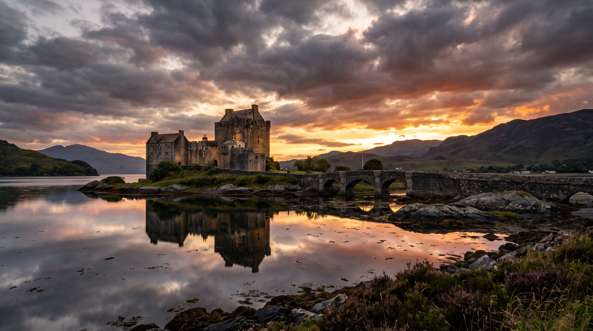
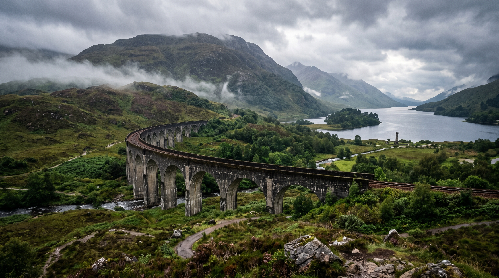
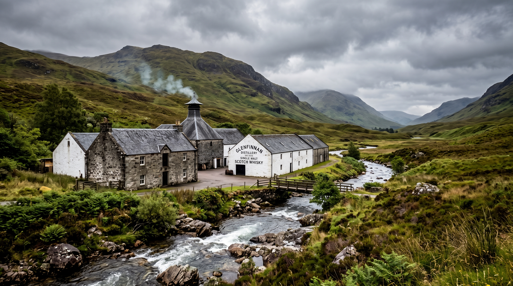
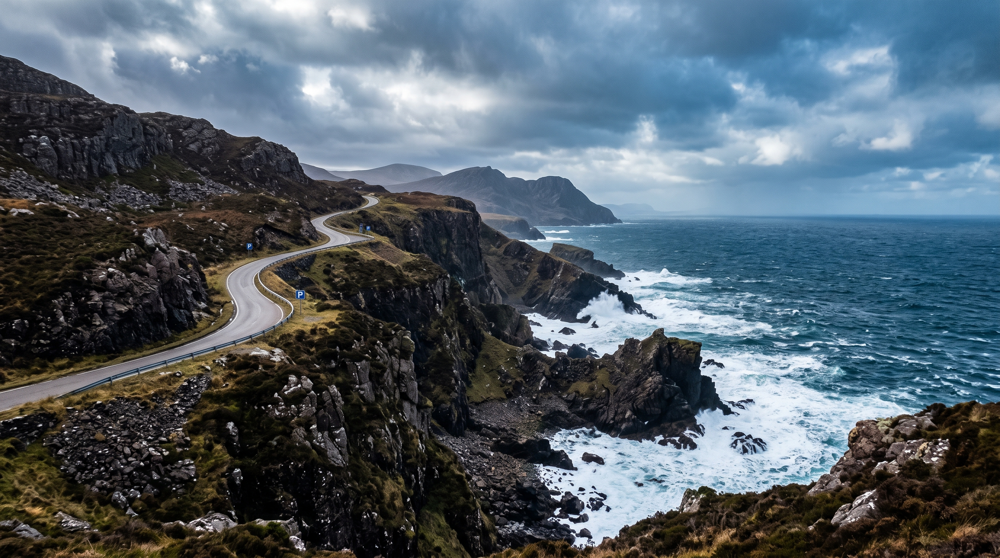
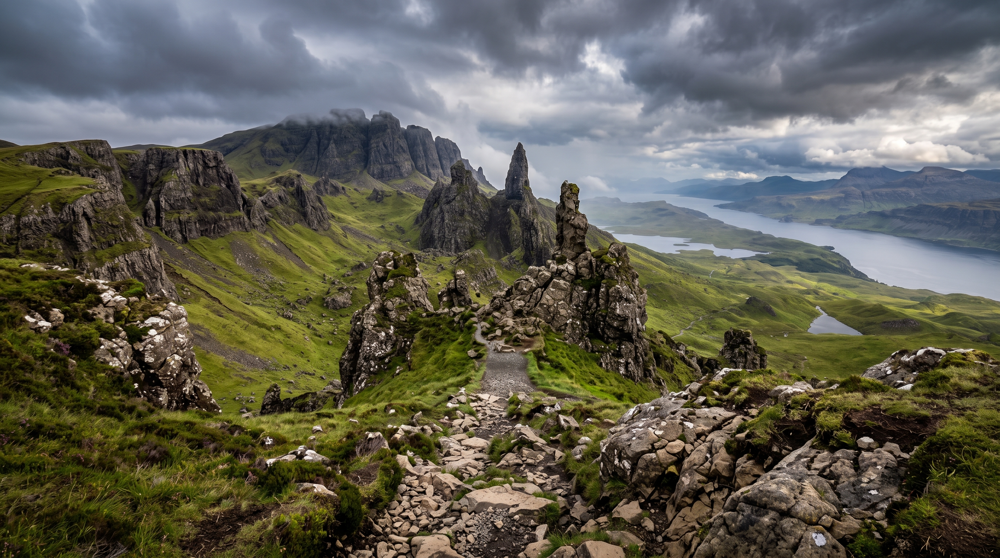
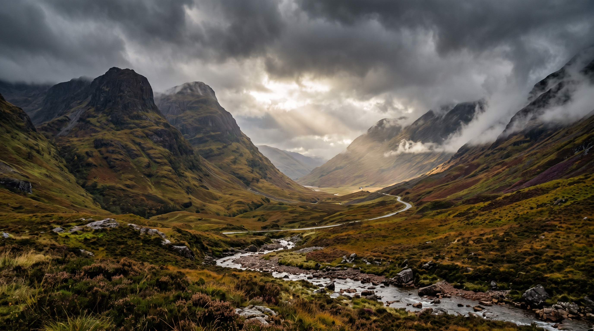

Highlands






History
The history of the Scottish Highlands is shaped by fierce clan rivalries and tribal systems. For centuries, the Highlands were ruled by independent bloodline clans, each with their own territories, tartans, and strict social structures, constantly resisting external pressures from the Lowlands and England.
The Jacobite Risings & The Highland Clearances
The 18th century brought pivotal events that altered the destiny of the Highlands. Following the defeat of the Jacobite risings, the British government dismantled the traditional clan system. This was followed by the devastating "Highland Clearances," which forced countless tenants off their ancestral lands and led to mass emigration, leaving a deep historical scar.
Culture
Celtic Heritage & Gaelic Culture
The Highlands are the heartland of Scottish Celtic culture. Traditional Scottish Gaelic, tartan attire, and bagpipe music symbolizing family honor form the unique cultural identity of the Highland people.
Highland Whisky Craftsmanship
Blessed with pristine spring water, rich peat resources, and a unique climate, the Highlands produce world-renowned single malt Scotch whisky. Traditional brewing techniques passed down through generations have become an indispensable symbol of Highland culture.
Core Attractions
Loch Ness & Urquhart Castle
World-famous for its deep, mysterious waters and the legendary Loch Ness Monster, the lake is flanked by the ruins of Urquhart Castle, a medieval fortress offering breathtaking panoramic views from above.
MoreGlencoe Valley
Carved by ancient glaciers, Glencoe Valley features epic cliffs, cascading waterfalls, and misty peaks. It is Scotland's most dramatic and historically poignant landscape, known also as the site of the 1692 Massacre of Glencoe.
MoreIsle of Skye & The Old Man of Storr
The most enchanting island off the west coast of the Highlands, featuring surreal geological formations. The "Old Man of Storr" is a towering rocky pinnacle, and the nearby Fairy Pools offer an otherworldly, magical landscape.
MoreLocal Highland Cuisine
Introducing traditional Highland dishes, such as the classic Haggis, fresh Scottish salmon, and warm, hearty Highland lamb stew.
Travel Tips
Recommended travel season is summer (May to September) to avoid harsh cold and severe weather. The Highland weather is unpredictable, so layer clothing and pack a waterproof, windproof jacket. Renting a car for a road trip is the best way to explore.